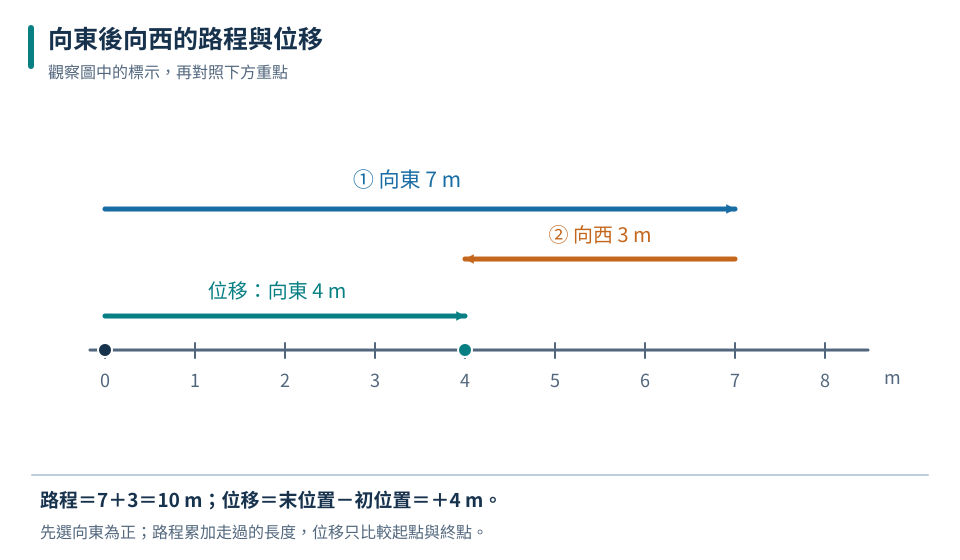
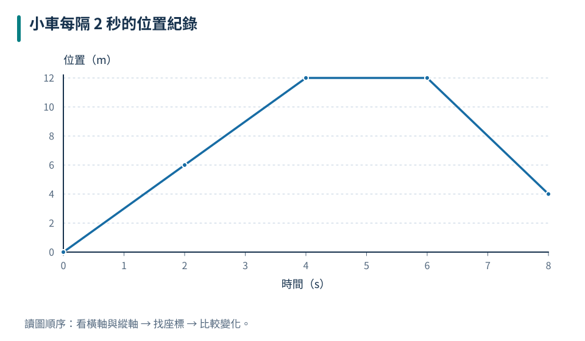
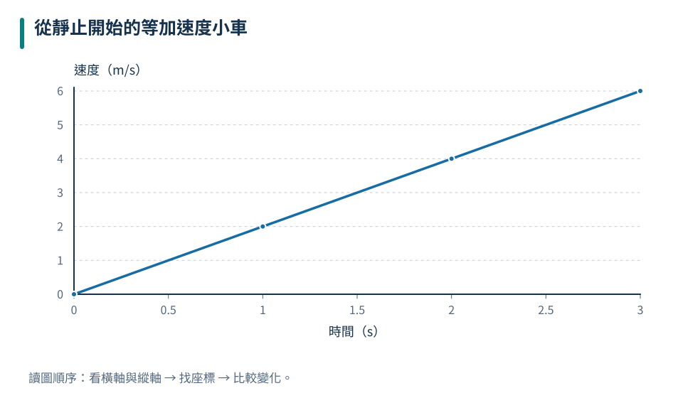

參考點與正方向
先定義座標，負位置不等於正在倒退。
九上 · 理化 · 第 1 章
同樣說「走了十公尺」，可能是一路前進，也可能是來回走。本章用位置、位移、速率與速度把運動說清楚，並練習從表格和圖形讀出物體如何移動。當運動越來越快、越來越慢或改變方向時，再用加速度比較速度改變的情況。
先備概念：會計算距離、時間及平均值、能閱讀直角座標圖、知道正負數可表示相反方向
LEARN & EXPLAIN
描述位置需要參考點和正方向。例如以校門為原點、向東為正，位置＋30 m 表示在校門東方 30 m。換了原點，位置數值可能改變，但同一段運動的起終點差不會因原點平移而改變；換正方向則會改變位移的正負號。
路程是沿實際路線走過的總長度，不會是負值。位移是終點位置減起點位置，關心的是起終點的相對改變。直線往返時，路程要逐段相加，位移則必須保留方向。回到起點，位移為零，並不表示過程中沒有移動。
先定義座標，負位置不等於正在倒退。
Δx＝終點位置－起點位置；路程通常大於或等於位移大小。

路程把兩段長度相加，位移只比較終點與起點。圖示位置依比例排列。
路程 45 m；位移向東 15 m。
位置為負只表示位於原點負方向一側；它仍可能正在向正方向移動。
LEARN & EXPLAIN
平均速率是總路程除以總時間；平均速度是總位移除以總時間，所以平均速度還有方向。總時間應包含題目指定期間內的停留時間。不同時段的速率不能隨意直接平均，除非各時段所占時間相同。瞬時速率則描述某一時刻的快慢，例如車上速率表的讀值。
位置時間圖以橫軸表示時間、縱軸表示位置。圖線上升表示位置朝正方向增加，下降表示朝負方向移動；水平線表示位置不變。直線斜率代表固定速度，線越陡，速度大小越大。兩線相交表示同時在同一位置，不代表兩者速度相同；圖上的線不是道路的形狀。
先把路程或位移算完整，再除以整段經過的時間。
1 m/s＝3.6 km/h，因為一小時 3600 秒、一公里 1000 公尺。
| 時間（s） | 位置（m） |
|---|---|
| 0 | 0 |
| 2 | 6 |
| 4 | 12 |
| 6 | 12 |
| 8 | 4 |

0～4 秒向正方向等速前進，4～6 秒停留，6～8 秒向負方向移動。
平均速率 2.5 m/s；平均速度＋0.5 m/s。
速率不能是負值；負速度表示方向，不能直接解讀成「比較慢」。
LEARN & EXPLAIN
加速度描述速度改變的快慢，平均加速度＝速度變化量／經過時間，單位 m/s²。計算時先選正方向，速度和加速度都要帶方向。若速度與加速度同向，速率增加；若兩者反向，速率減少。因此負加速度不一定代表減速。
等加速度運動是在相同時間內速度改變量相同。速度時間圖是一條斜直線，斜率就是加速度；圖與時間軸之間的有號面積代表位移，軸下方計為負。對單段等加速度運動，也可用初末速度的平均求平均速度；若中途方向反轉，算路程需分段。忽略空氣阻力、在地表附近的自由落體是常見例子。
速度為零的一瞬間仍可能有加速度，例如上拋物最高點。
只有速度隨時間均勻改變時，才能直接用初末速度平均代表整段平均速度。
| 時間（s） | 速度（m/s） |
|---|---|
| 0 | 0 |
| 1 | 2 |
| 2 | 4 |
| 3 | 6 |

每秒速度增加 2 m/s，因此加速度為＋2 m/s²。
加速度向西 2 m/s²；位移向東 15 m。
速度時間圖上的斜線不表示小車走斜坡；座標軸畫的是時間與速度。
TRY, OBSERVE, EXPLAIN
REVIEW
先定義座標，負位置不等於正在倒退。
回到這一節複習先把路程或位移算完整，再除以整段經過的時間。
回到這一節複習速度為零的一瞬間仍可能有加速度，例如上拋物最高點。
回到這一節複習CHAPTER TEST
先獨立作答，再看解析。中難與難為編者估計，尚未經學生實測校準。